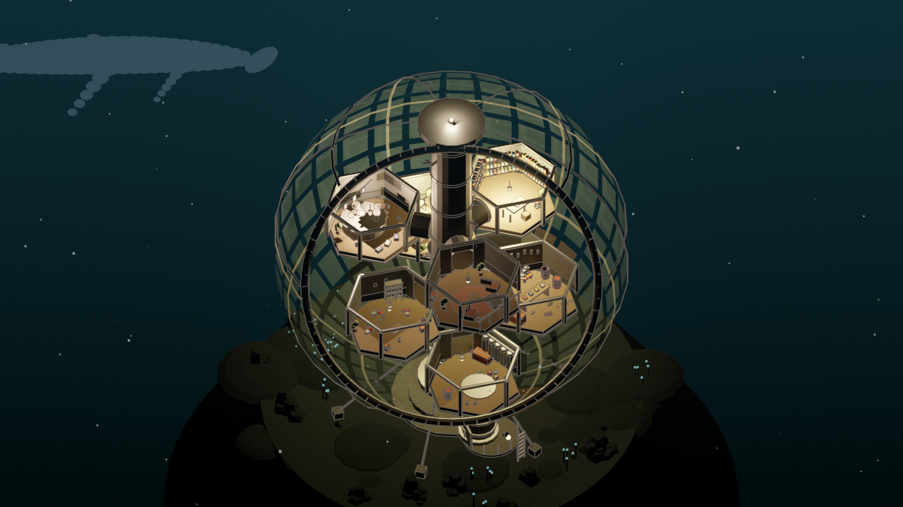
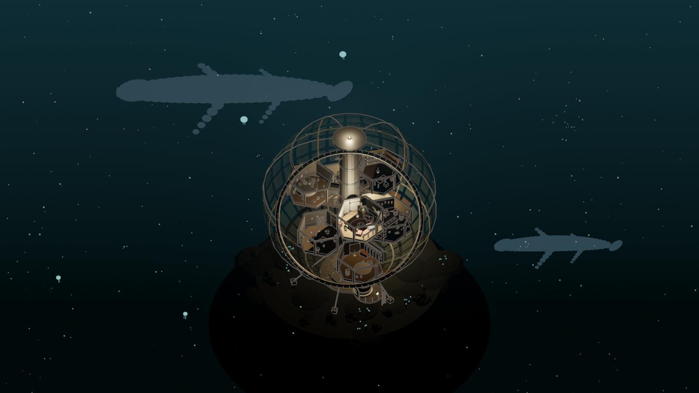
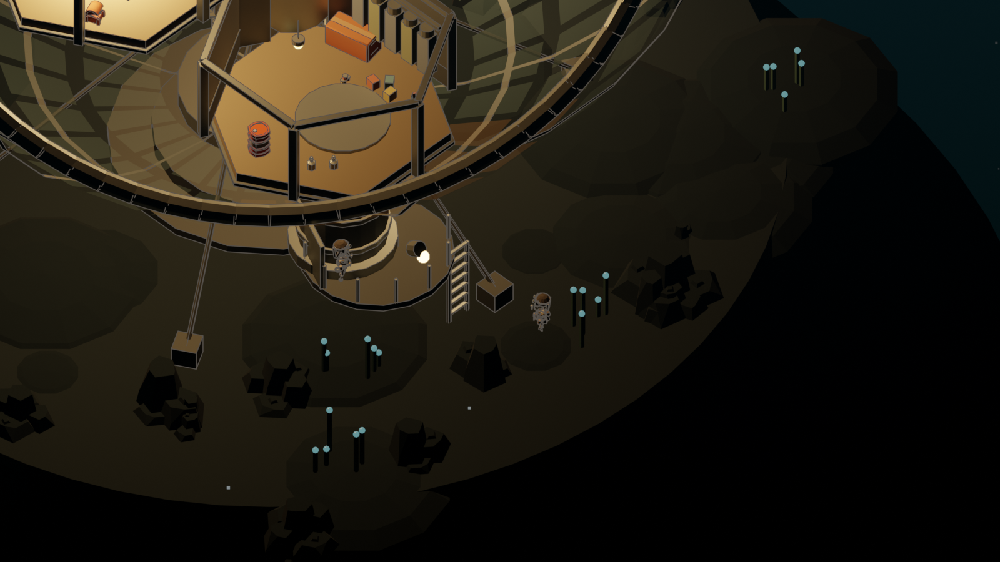

잔해 방주 · 1막
깊고 검은 물속에 떠 있는 유리돔 하나.
그 안의 불 켜진 방들이 게임의 첫 화면이고, 밖은 아름답지만 숨을 쉴 수 없다.
인간은 바다에 버렸고, 바다는 200년간 보관했다.
차갑고 어둡고 눌린 물은 물건을 늙히지 않는다. 그래서 육상 잔해의 글자는 지워졌지만 해구에서 건진 포장지의 성문은 아직 읽힌다. 스캔이 왜 이 세계의 핵심 행위인지가 설정이 아니라 물리로 설명된다.
플레이어가 편의점에서 찍은 그 봉지가, 200년 뒤 해구에서 건져지는 같은 물건이다.
살아남은 방식이 문화가 된다. 육상 일곱 무리와 같은 원리.
재지 않은 것은 없는 것이다.
깊이 내려간 자가 어른이다. 조상이 남긴 구멍을 찾아 막는 것이 평생의 일이다. 왜 막아야 하는지는 잊혔다.
먹인 것만이 돌아온다.
구경하러 왔다가 못 돌아갔다. 200년째 스스로를 손님이라 부른다.
세로축 하나가 지도이자 난이도이자 연대다. 금기 넷은 미신처럼 들리지만 전부 물리적 사실이다.
| 구역 | 빛 | 성격 | 금기 |
|---|---|---|---|
| 광층 | 위에서 내려오는 회청색 | 밝고 따뜻하고 금지된 곳 | 천장을 오래 보지 말 것. 오래 보면 올라가고 싶어진다. 올라가면 터진다 |
| 박광층 | 위쪽만 희미하게 | 모든 것이 그림자로 먼저 온다 | 위로 빛을 비추지 말 것. 위에서 보면 우리가 보인다 |
| 무광층 | 없다. 모든 빛은 살아 있거나 사람이 켠 것 | 돔들이 사는 층. 집의 층 | 부르는 빛에 답하지 말 것. 어둠 속의 예쁜 빛은 대개 입의 일부다 |
| 해구 | 없다. 랜턴도 멀리 못 간다 | 성문층. 인간이 버린 것이 쌓인 곳 | 혼자 가지 말 것. 가져온 것을 세기 전에 돔에 들이지 말 것 |
학명을 쓰지 않는다. 돔 사람들이 부르는 이름만 쓴다.
몸은 아직 어둠 속인데 창 앞에는 목만 와 있다. 불빛을 좋아해 유리에 얼굴을 붙이고 들여다본다. 해치려는 것이 아니라 궁금해하는 것이다. 그러나 그 무게로 유리에 금이 간다.
조명을 켜면 보이지만 동시에 부른다. 존재를 아는 방법은 하나뿐이다. 주변의 다른 소리가 전부 사라진다.
위협이 아니라 식구다. 에어락 틈으로 나갔다가 무언가를 물고 돌아온다. 성문이 찍힌 뚜껑, 색이 남은 조각. 사람에게 이름을 받고, 좋아하는 사람의 손목을 감는다. 힐링 스팟의 첫 단서는 언제나 문어가 물고 온다.
본 사람이 없다. 실루엣조차 없다. 해구 쪽에서 아주 낮은 소리가 일정한 간격으로 올라오고, 눈금 무리는 200년치 일지에 그 간격을 적어 왔다. 간격은 조금씩 짧아지고 있다.
전부 마지막 문장이 질문이다. 옳은 선택이 없는 카드가 섞여 있다.
새벽에 누가 손톱으로 유리를 긁었다고 했다. 아침에 보니 소리가 아니라 금이었고, 그 방에는 아이들 침상이 있다. 지금 닫으면 유리는 버티고, 안의 것은 두고 나와야 한다.
환기구 바람이 어제보다 미지근하다. 산소판 한 장이 상해서, 모두가 쓰면 사흘이고 반이 참으면 엿새다. 누가 반이 될지는 아직 아무도 말하지 않는다.
몸은 아직 어둠 속인데 창에는 이미 얼굴이 붙어 있다. 해치려는 것이 아니라 들여다보는 중이라 더 오래 머물고, 유리는 그 무게로 조금씩 휜다. 불을 끄면 갈 것이다. 끄면 우리도 못 본다.
문지기가 왔다는 뜻이다.
설명 없이 이 게임이 무엇인지 몸으로 알게 하는 10분. 보다 → 나가다 → 돌아오다 → 커지다 → 찾아오다.
Blender 절차 생성. 생성 AI 이미지 0장.


세계관 성경 2편, 사건 카드 16장(서버에서 실제로 뽑힘), 힐링 스팟 6곳 본문, 각인 4종, 스팟 API, 첫 10분 대본, 유리돔 단면 생성기와 렌더 3장, dome_core.glb
막 구분(심해·터널·지상 카드 분리), 공기·깊이 게이지, 심해 실시간 화면, 잠수복과 큰 것들 모델, 수중 사운드
육상 세계(쇼핑몰·일곱 부족·공룡)는 폐기되지 않았다. 침수 지하철 터널을 지나 도달하는 3막 콘텐츠로 남아 있고, 이미 돌아가는 화면이 있다.